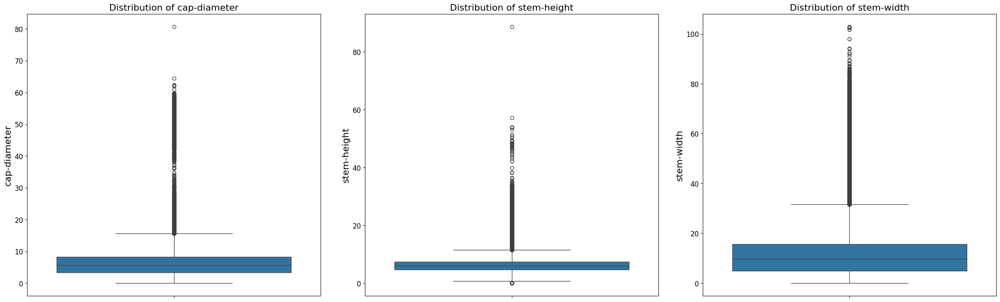

Built a Classification Machine Learning model that predicts whether a mushroom is poisonous or edible. Demostration of Data Preprocessing, Data Analysis and Machine Learning application using large datasets.
Skills: EDA, Machine Learning, Classification, Python, sklearn, Data Cleaning
Roberto Pariente on September 7, 2024 | Reading Time: 7 minutes
This project addresses a binary classification challenge: determining whether mushrooms are poisonous or edible based on their characteristics. Using a Kaggle dataset with a variety of categorical and numerical features, the goal is to develop an optimized, accurate classification model that balances prediction performance with computational efficiency.
The project showcases skills in data preprocessing, exploratory analysis, hyperparameter tuning, and model evaluation, utilizing techniques such as XGBoost and LightGBM for robust classification.

The dataset contains over 3 million mushroom records, featuring 22 attributes—both categorical (e.g., cap shape, gill color) and numerical (e.g., cap diameter, stem height). Categorical features are highly descriptive of mushroom appearance, while numerical features provide measurement data.
Several features in the dataset have a substantial amount of missing data, with over 60% of values missing. To assess whether these features are essential for the model, we performed a Cramér's V analysis and Chi-square contingency test.
| Feature | Data Type | Missing Values (%) |
|---|---|---|
| Veil Type | Categorical | 94.88% |
| Spore Print Color | Categorical | 91.43% |
| Stem Root | Categorical | 88.45% |
| Veil Color | Categorical | 87.90% |
| Stem Surface | Categorical | 63.51% |
| Gill Spacing | Categorical | 40.37% |
| Cap Surface | Categorical | 21.53% |
| Gill Attachment | Categorical | 16.89% |
| Ring Type | Categorical | 4.13% |
| Gill Color | Categorical | 0.00183% |
| Habitat | Categorical | 0.00144% |
| Cap Shape | Categorical | 0.00128% |
| Stem Color | Categorical | 0.00122% |
| Has Ring | Categorical | 0.00077% |
| Cap Color | Categorical | 0.00080% |
| Does Bruise or Bleed | Categorical | 0.00026% |
| Cap Diameter | Numerical | 0.00013% |
| ID | Numerical | 0.00000% |
| Stem Width | Numerical | 0.00000% |
| Class | Categorical | 0.00000% |
| Stem Height | Numerical | 0.00000% |
| Season | Categorical | 0.00000% |
The dataset contains a slightly imbalanced distribution between edible and poisonous mushrooms. Approximately 1.7 million records are poisonous, and 1.4 million are edible. Although the class imbalance exists, it is not extreme enough to require specialized techniques like oversampling or undersampling.
Exploratory Data Analysis (EDA) is a critical step in understanding the dataset's characteristics and identifying patterns or anomalies. In this section, a comprehensive EDA is performed on the poisonous mushrooms dataset to uncover insights and inform the model development process.
We analyzed the distribution of numerical features using histograms and boxplots. Outliers were detected using the quartile method, and transformations like Box-Cox were considered to normalize distributions. For example, the ‘cap-diameter’ feature had around 13,000 outliers, impacting model performance.

We analyzed categorical features in relation to the target variable using count plots and stacked bar plots to visualize class distribution (edible vs. poisonous). This allowed us to identify informative features for classification.

Correlation Matrix
A correlation matrix was constructed to analyze the relationships between numerical features. This matrix helps in identifying any strong correlations among features, which can be useful for feature selection and engineering.
It was observed that the numerical features do not exhibit strong correlations with one another, leading to the decision to retain all of them in the model.
Chi-Square Test of Independence
To evaluate the strength of the association between categorical features and the target variable, we conducted the Chi-Square test of independence. This statistical test assesses whether there is a significant association between categorical variables.
| Feature | p-value | Importance |
|---|---|---|
| Cap Shape | 0.0 | Important |
| Cap Surface | 0.0 | Important |
| Cap Color | 0.0 | Important |
| Does Bruise or Bleed | 0.0 | Important |
| Gill Attachment | 0.0 | Important |
| Gill Spacing | 0.0 | Important |
| Gill Color | 0.0 | Important |
| Stem Root | 0.0 | Important |
| Stem Surface | 0.0 | Important |
| Stem Color | 0.0 | Important |
| Veil Type | 0.3768 | Not Important |
| Veil Color | 0.0 | Important |
| Has Ring | 0.0 | Important |
| Ring Type | 0.0 | Important |
| Spore Print Color | 0.0 | Important |
| Habitat | 0.0 | Important |
| Season | 0.0 | Important |
Cramer's V Test
The Cramer's V statistic was used to quantify the strength of these associations, with values closer to 1 indicating a stronger association.
| Feature | Cramér's V |
|---|---|
| Cap Shape | 0.16758 |
| Cap Surface | 0.28326 |
| Cap Color | 0.25858 |
| Does Bruise or Bleed | 0.03771 |
| Gill Attachment | 0.23847 |
| Gill Spacing | 0.14030 |
| Gill Color | 0.22004 |
| Stem Root | 0.52088 |
| Stem Surface | 0.35719 |
| Stem Color | 0.25733 |
| Veil Type | 0.01185 |
| Veil Color | 0.49590 |
| Has Ring | 0.04975 |
| Ring Type | 0.19680 |
| Spore Print Color | 0.42574 |
| Habitat | 0.17769 |
| Season | 0.14920 |
Feature engineering involves transforming raw data into features that improve model performance. Decisions in this section are guided by the correlation tests, ensuring the dataset is optimized for accurate classification.
| Feature | Missing Perc | Association | p-value | Decision |
|---|---|---|---|---|
| Veil Type | 94.884350 | 0.01185 | 0.376834 | Drop |
| Spore Print Color | 91.425482 | 0.42575 | 0.0 | Impute Missing |
| Stem Root | 88.452732 | 0.52089 | 0.0 | Impute Missing |
| Veil Color | 87.896702 | 0.49591 | 0.0 | Impute Missing |
| Stem Surface | 63.513162 | 0.35719 | 0.0 | Impute Missing |
| Gill Spacing | 40.373988 | 0.14031 | 0.0 | Impute Missing |
| Cap Surface | 21.528227 | 0.28327 | 0.0 | Impute Missing |
| Gill Attachment | 16.892080 | 0.23847 | 0.0 | Impute Missing |
| Ring Type | 4.134818 | 0.19681 | 0.0 | Impute Missing |
| Gill Color | 0.001829 | 0.22005 | 0.0 | Impute Mode |
| Habitat | 0.001444 | 0.17770 | 0.0 | Impute Mode |
| Cap Shape | 0.001283 | 0.16758 | 0.0 | Impute Mode |
| Stem Color | 0.001219 | 0.25734 | 0.0 | Impute Mode |
| Has Ring | 0.000770 | 0.04975 | 0.0 | Drop |
| Cap Color | 0.000805 | 0.25858 | 0.0 | Impute Mode |
| Does Bruise or Bleed | 0.000257 | 0.03771 | 0.0 | Drop |
| Cap Diameter | 0.000128 | - | - | - |
| ID | 0.000000 | - | - | - |
| Stem Width | 0.000000 | - | - | - |
| Class | 0.000000 | - | - | - |
| Stem Height | 0.000000 | - | - | - |
| Season | 0.000000 | 0.14921 | 0.0 | Keep |
Based on the Chi-Square and Cramér's V tests, features with high missing values and low association with the target variable were dropped:
Features with missing data that were still relevant to classification were imputed:
During the univariate analysis, the 'cap-diameter' feature revealed approximately 13,000 outliers when analyzing the 5% and 95% quartiles. To address this without dropping a large number of records, Box-Cox transformation was applied. This transformation normalizes the data, ensuring that the distribution of the feature is closer to normal, which helps improve model performance by eliminating the influence of extreme values.

Some categorical features contained categories with less than 100 occurrences. These were consolidated into an "Other" category to reduce noise without losing valuable information. After this reduction, the distribution of these features was checked to ensure that no critical data was removed.
In this section, we outline the process of selecting, optimizing, and evaluating models for classifying poisonous mushrooms. We chose the Matthews Correlation Coefficient (MCC) as our primary evaluation metric due to its robustness in handling imbalanced datasets. MCC takes all confusion matrix categories into account, making it ideal for binary classification in this scenario.
We experimented with XGBoost, LightGBM, and Random Forest—all well-suited for structured data:
These models were chosen due to their robustness, high efficiency, and ability to capture complex patterns within the dataset.
To ensure model robustness, we applied Stratified Cross-Validation, which maintains the proportion of edible and poisonous mushrooms in each fold. 5-fold cross-validation was tested to prevent performance bias from class imbalance.
We used Optuna for hyperparameter optimization. By intelligently searching the hyperparameter space, Optuna identified the best parameters for each model, improving performance. The table below shows the best configurations and their MCC scores:
| Model | Best Hyperparameters | MCC |
|---|---|---|
| XGBoost | {'max_depth': 38, 'learning_rate': 0.0262, 'n_estimators': 518, 'subsample': 0.8475, 'gamma': 3.5493} | 0.984328 |
| LightGBM | {'learning_rate': 0.0326, 'n_estimators': 976, 'max_depth': 12, 'num_leaves': 1135, 'feature_fraction': 0.6876} | 0.984056 |
| Random Forest | {'n_estimators': 138, 'max_depth': 14, 'min_samples_split': 2, 'min_samples_leaf': 3, 'max_features': 'sqrt'} | 0.978417 |
To further enhance predictive power, we used stacking—combining the outputs of XGBoost, LightGBM, and Random Forest models, with a meta-model to generate final predictions. This method improved performance by capturing a broader range of patterns, resulting in a higher MCC score.
After extensive experimentation with XGBoost, LightGBM, and Random Forest, the stacking ensemble model yielded the best results. By combining the strengths of these models, the ensemble delivered a robust and accurate final prediction.
The final model achieved a Matthews Correlation Coefficient (MCC) of 0.98476, indicating strong performance in distinguishing between poisonous and edible mushrooms, even with a slightly imbalanced dataset.
The stacking ensemble model successfully addressed the challenges of this classification task. Its high MCC score demonstrates the model's robustness and ability to generalize well across different data partitions. The combination of multiple models allowed us to capture diverse patterns, leading to an effective solution for classifying mushrooms.
Although the model performed well, there are areas for further enhancement: